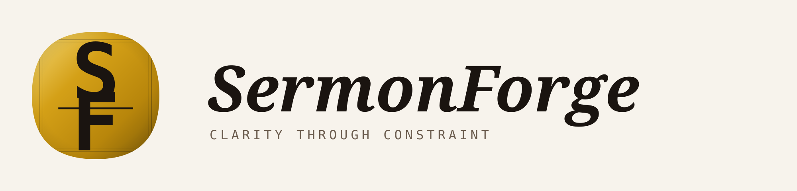

Desktop App · Windows + Mac

First Run · Mac
Open the .dmg, drag SermonForge into your Applications folder, and double-click to launch. The app is signed and notarized by Apple — no Gatekeeper warnings.
First Run · Windows
Windows will show a blue "Windows protected your PC" warning because the installer isn't yet signed. Click More info, then Run anyway. This is normal for new apps and doesn't mean anything is wrong.
Requires
A Claude API key from console.anthropic.com. Enter it on first launch — no account or subscription beyond that.
Updates
Automatic. The app checks for new releases on launch and installs them silently in the background.